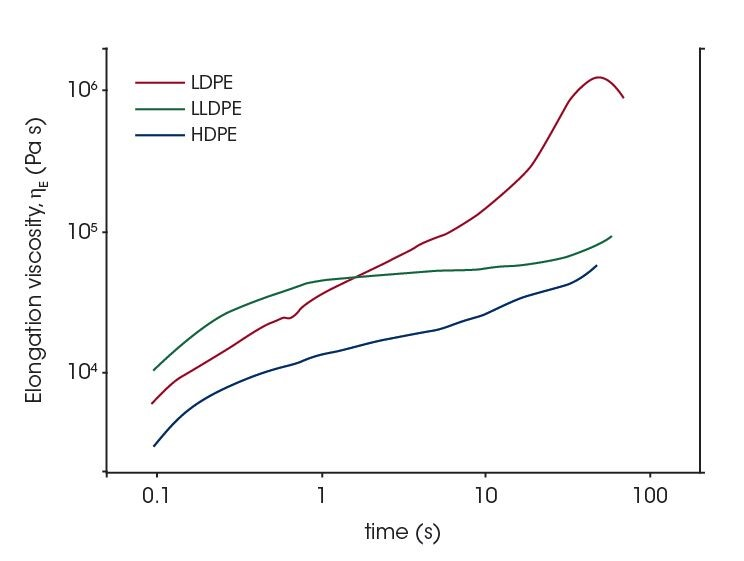
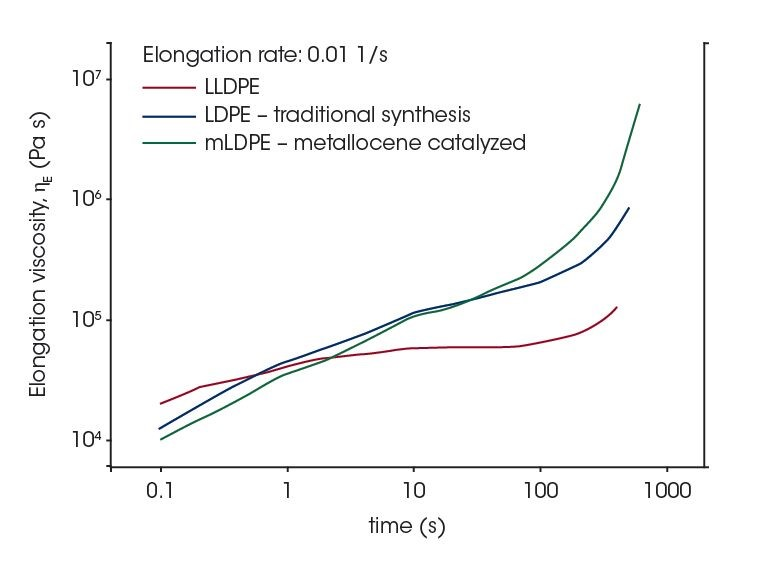

The Extensional Viscosity Fixture (EVF) is a patented system that facilitates extensional viscosity measurements of highly viscous materials such as polymer melts, dough, and adhesives on the ARES-G2. Understanding the material behavior under extensional deformation is relevant to a wide range of processing conditions including blow molding and fiber spinning, and is sensitive enough to provide critical information about molecular structure and branching. The EVF’s compact, friction-free, design delivers the ideal platform for performing extensional measurements that complement traditional shear rheology.
Effect of branching in polyethylene
Measuring the extensional viscosity can reveal a lot of critical information about the behavior of polyolefins under during fiber spinning or film blowing. In these processes, the occurrence of strain hardening response is desirable and elongational rheology data can be used to optimize the processing conditions. The figure shows the elongation viscosity for three representative polyethylene materials – Low Density Polyethylene (LDPE), Linear Low Density Polyethylene (LLDPE) and High Density Polyethylene (HDPE). The LDPE sample shows considerable strain hardening at high elongation strain as a result of the high long chain branch content. By contrast, the HDPE and LLDPE samples have low long chain branching, and therefore, exhibit very little strain hardening.

Effect of catalysis process in polyethylene synthesis
Elongation data of polyethylene samples obtained by metallocene catalysis in the Dow process is presented in the figure. For comparison, data from LDPE and LLDPE samples manufactured using the traditional process are also shown. The use of the metallocene catalyst controls the polymer architecture – this allows tailoring of the molecular structure, and consequently, the ability to tune the physical properties to meet the desired performance. The PE material synthesized using the metallocene catalyzed process shows elongational properties with strong strain hardening, and shape of the viscosity curve is very similar to that of the standard LDPE material.
